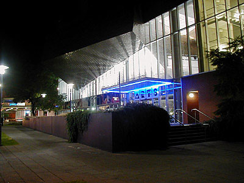

Bazaar Ceramics

Bazaar Ceramics Studio has been operating for 20 years. We started as a small collective, operating in the picturesque township of Hahndorf, South Australia - known for its quality arts and crafts. Over the years the studio has passed through a number of transformations. In the first 7 years of its existence - as a co-operative, it was well known for producing quality domestic ware and fine individually designed art pieces.
Each member of the co-operative was responsible for designing, throwing, glazing and firing their own work. A gallery director was employed to look after the gallery and all aspects of marketing.
As the reputation of the studio grew nationally, and production expanded to meet demand, the structure of the business changed to its present form. Emma Rich bought the business and moved into larger premises in Stepney, Adelaide. The production staff increased and currently includes a production manager, 2 full time ceramic designers and 6 production potters.
Bazaar Ceramics has a wide range of products to meet the needs of clients both nationally and internationally. The studio produces exquisite one off sculptural pieces for the individual and corporate collector. Commissions make up approximately 40% of this work. These pieces can be found in board rooms, international hotels and private homes as far away as the US and Germany.
Bazaar Ceramics also produce unique, individually designed domestic ware, including full dinner sets and ovenware.
The current range of products consist of one off ceramic forms (eg vase and bottle forms and dishes) using a number of traditional glazes that are highly prized amongst ceramic collectors. These include:
The other area of ceramic production is the “domestic” ware range. These pieces are also individually designed and hand crafted to the highest quality, however unlike the individual art pieces, our customers are able to purchase entire dinner, coffee and ovenware in a range of designs. Products available in this range include: